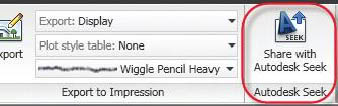

Autodesk Seek 首頁提供了線上圖塊下載服務，可以透過 AutoCAD 的 SEEK 指令開啟網頁瀏覽器並顯示 Autodesk Seek 首頁。
但是繁體中文版好像不支援，所以輸入 SEEK 指令會顯示不明指令，但是 F1 仍然保有功能說明：
F1 功能說明Autodesk Seek 上提供的產品設計資訊取決於提供者（公司合作夥伴和個人提供者）發佈至 Autodesk Seek 的內容。內容可包括 3D 模型、2D 圖面以及產品或元件的規格、小冊子或描述。Autodesk Seek 目前僅以美式英語提供。
有需要的朋友可以去下載，有 2D、3D DWG 格式以及其他軟體的格式喔～